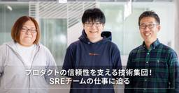

Platinum Data Blog by BrainPad ブレインパッド
https://blog.brainpad.co.jp/
株式会社ブレインパッドの社風、働き方、当社の多彩なプロフェッショナルを紹介するオウンドメディアです。
フィード

プロダクトの信頼性を支える技術集団！SREチームの仕事に迫る
Platinum Data Blog by BrainPad ブレインパッド
ブレインパッドのSRE（Site Reliability Engineering）チームは、パーソナライズ・プラットフォーム「Rtoaster（アールトースター）」などのデータ活用プロダクトをお客様が安心して利用できるよう、サービスの安定稼働と信頼性の確保に取り組んでいます。普段は明かされないプロダクト運用の舞台裏、SREチームが大切にしている視点など、同チームで活躍する井上さん、内山さん、吉田さんにお話を伺いました。内山 佐和子 吉田 史也 井上 剛志 XaaSユニットサービスオペレーション XaaSユニットサービスオペレーション XaaSユニットサービスオペレーションリード 多彩なキャリアをもつメンバーが集うチーム──まず、皆さんの自己紹介をお願いします。井上内山吉田「お客様視点」でプロダクトの信頼性を守る── SREチームの役割やミッションを教えてください。井上── 一般的なインフラエンジニアとSREの違いはどのような点にありますか。井上吉田── 他社とブレインパッドのSREチームを比較した際に、何か違いはありますか。井上互いの専門性を活かし合うチーム──井上さんがマネジメントされているSREチームですが、その中で吉田さん・内山さんが担当されている業務内容を教えてください。吉田内山── 仕事のやりがいや醍醐味を教えてください。吉田内山──各自の力が発揮されることで、相乗効果が生まれていることが伝わりました。業務を進める中で、ご自身の強みはどのような点にあると感じますか。吉田内山求めているのはユーザー視点で考え、実行できる仲間── チームを成長させるために、これから仲間として一緒に働きたいのはどのような方でしょうか。井上吉田内山今後の展望吉田将来に向けた挑戦としては、新しいプロダクトに対して安定稼働の仕組みを構築することです。これまでは既存システムの改善が中心でしたが、これからは新サービスの品質や価値を高めるための取り組みにも注力していきたいと考えています。内山また、ゆくゆくはマネジメントにもチャレンジしていきたいです。最近はマネジメントに関する研修を受けたり、社外のテックカンファレンスで会場Wi-Fiの提供に挑戦する機会がありました。そこで得た学びを実践に活かしたり、新しい領域へチャレンジすることで自身のスキルを拡大したいと考えています。井上今後の方向性として
4日前

データ分析の社内コンペを社員の発案で実施。福利厚生をより魅力的にするアイデアが続々と
Platinum Data Blog by BrainPad ブレインパッド
ブレインパッドは、アイデアと技術を駆使して、データ活用による価値創出と、自身の職種や職位を超えた自己研鑽を行う場として、社内データを分析するコンペを開催しました。一般的なコンペのようにモデルの精度などで「定量的」に評価するのではなく、データを使って価値を生み出せたのかを全社投票で「定性的」に評価しました。結果、全社から「やってみたい」という声から生まれ、さまざまな部署から30名を超える社員が参加しました。本記事では、コンペを企画・運営したメンバーと参加者に、実施の舞台裏やブレインパッドの企業文化について語っていただきました。ささいな雑談から始まった、「社内コンペ」への道──まず、運営に携わったお二人より、データ分析コンペについて教えてください。竹村軍司SKILL UP-AID」の費用対効果の向上をテーマにしました。SKILL UP-AIDとは、業務に関するスキルアップのために年間12万円まで支援する制度です。外部研修受講や書籍購入、資格取得に利用することが可能で、学会などの参加費の補助として利用されることもあります。この制度の利用状況のデータを匿名加工を施した状態でお渡しして、費用対効果をさらに上げるにはどうするかを考えてもらう内容です。竹村──この社内コンペは、初めてのことですよね。どのように実現したのでしょうか？軍司※D会議：正式名称は「これDoすか？会議」社員が新規事業や社内改善等の新たなアイデアを経営陣に発表・提案し、その場で経営陣からの「Do！（承認）」を得ることができる取り組みD会議の具体的なイメージは以下のブログもご覧ください。https://blog.brainpad.co.jp/entry/2024/12/16/103014https://blog.brainpad.co.jp/entry/2024/12/16/103014竹村軍司竹村若手の「やりたい」を形にするサポートする文化──内池さんは今回アドバイザーとして関わられたそうですね。会社としてはこの取り組みをどう受け止めていましたか？内池今回の社内コンペはとても面白いアイデアだったので、会社にとって価値があると伝われば、社内のいろいろなメンバーのサポートが得られるはず。そう考えて、価値が伝わる形になるようサポートをしていました。──具体的にはどのようなサポートをされたのでしょうか？内池竹村軍司内
18日前
新卒入社 入社1年リアルレポート（2024年4月新卒入社編）
Platinum Data Blog by BrainPad ブレインパッド
ブレインパッドは毎年多くの新卒社員を迎え入れています。今回は入社1か月後、6か月後の姿をご紹介した2024年新卒入社の3名のメンバーに再び集まってもらいました。それぞれ異なる職種で活躍する彼らが1年経ってどのように成長したのか、等身大の姿をクロストークでお届けします。ブレインパッドの社風やカルチャーを少しでも感じていただけたら幸いです。森俊輔(もりしゅんすけ) 森遥(もり はるか) 枝崎健翔(えださき けんと) 村上晴香(むらかみ はるか) 慶應義塾大学環境情報学部 卒業ビジネスコース 北里大学大学院理学研究科分子科学専攻博士課程 卒業データサイエンティストコース 立命館アジア太平洋大学国際経営学部 卒業エンジニアコース インタビュアーHRユニット新卒研修担当 入社して1年、振り返って思うこと村上枝崎森遥 森俊輔村上森俊輔正直に言うと、この1年で思うようにいかないことも多くありました。自分の知識がごく表面的なものに過ぎず、クライアントが抱えている課題の深い部分に寄り添えていないと感じたときは、無力さを感じることも多いです。森遥 実は、入社前は業務に必要なコーディング経験が全くありませんでした。はじめはコードを読むだけでも精一杯でしたが、最近では、クライアントからの依頼に対して「おそらくこの辺りを確認すればいいな」と自分で考えて手を動かせるようになってきました。利用者からの問い合わせ対応も大事にしている業務のひとつです。プロダクトの内容を自身が理解していないと的確な回答はできません。だからこそ、「他にも便利な機能がありますよ」「その目的であればこの設定をしておくといいですよ」というようにプラスアルファの提案を心がけています。枝崎チームの中で実務を担当しているのが私1人のため、基本的にプロジェクトの作業全てに関わります。社内外の各関係者との折衝やスケジュール設定、システムの設計・開発など、プロジェクトの推進に必要な作業を自身で作り上げていく必要があります。一方で、複数の部署からアドバイザーが何名かプロジェクトに参画しているため、状況や内容に応じてサポートしていただく環境が整っています。入社前に想像していた姿と現在地村上枝崎仕事内容の面では、入社当時はエンジニアとして基盤構築が中心となるイメージを持っていましたが、実際はデータ分析を含むより広い業務を担当する方向に展開して
25日前
今年もプロダクト開発エンジニアによるテックチャレンジ【2025年度】を開催しました！
Platinum Data Blog by BrainPad ブレインパッド
こんにちは！ XaaSユニットエンハンス開発Gの古賀です。こちらをチェック！テックチャレンジとは？企画の趣旨テックチャレンジとは、自社プロダクトの開発業務に関連する技術に縛られず、さまざまな技術に挑戦する機会をエンジニアに提供し、総合的なスキルアップを目指すことを趣旨とした技術発表会です。取り組み内容2024年12月から2024年2月までの期間内で、参加者各人が自由にテーマを決め、業務に余裕がある時期を活用し、そのテーマについて、調査と開発を進めました。発表会合計2日間の取り組みの終了後、参加者が興味のある成果物に対して投票を行い、当日登壇するメンバーを決めました。当日、発表されたテーマは以下の通りになります。Qiitaに一年間ほぼ毎週投稿してみた件WSLにISUCON環境を作ってパフォーマンスチューニングするX-WISE beta版（LLM-Native時代のX-point）LLMによるAkinatorOR（オペレーションズリサーチ入門）大規模データセットを扱うためのアルゴリズムとデータ構造を学ぶ三体問題シミュレーションをwasmで作ってみたaction+の保守をしていると欲しくなるツールをつくるGoogle Driveのファイルを右クリックして起動するアプリを作る最近のトレンドを抑えたワクワクするテーマがいっぱいですね！ 今年の傾向今年のテックチャレンジでは、特に調査・探究系のテーマが多く見られ、新しい技術の台頭やトレンドを感じる結果となりました。また、業務改善に焦点を当てたテーマが次に多く、各人が日々業務を通していろいろな課題感を持っていることがわかりました。特別賞の発表今年はグループリーダーがそれぞれ特別賞を選び、以下の5つのテーマが見事受賞することになりました！選出された5名の発表者には、それぞれ賞品が手渡されました！受賞時の様子発表会後の懇親会発表会を終えた後は、参加したエンジニア同士でケータリングを囲み懇親会を行いました。普段の業務ではあまり関わる機会のない社員同士で話をする機会となり、親睦を深めることができました。懇親会の様子感想参加者の皆さんからは、以下のようなご感想をいただきました！モダンな技術や知らない技術の発表が多く勉強になった業務に直接活かせそうなツールはぜひ開発を続けて欲しいし、利用したい短期間で成果物を形になるよう仕上げるのはすごいまと
1ヶ月前
新卒カスタマーサクセスの挑戦 〜ブレインパッドで歩んだ“成長の2年間”
Platinum Data Blog by BrainPad ブレインパッド
ブレインパッドのカスタマーサクセス（CS）職は自社サービスの運用支援にとどまらず、クライアントのマーケティング戦略立案やプロダクト活用の最適化まで担当しています。御子柴 雄 田島 らい華 佐藤 穂花 千田 琢真 XaaSユニットサービス推進グループリーダー（育成担当） XaaSユニットサービス推進 XaaSユニットサービス推進 XaaSユニットサービス推進 多様なバックグラウンドを持つ、CSメンバーたちの歩み──まずは、皆さんの自己紹介をお願いします。田島佐藤千田御子柴──ブレインパッドのCS職としての、現在の仕事内容を教えてください。田島Rtoaster（アールトースター）」やマーケティングオートメーションツール「Probance（プロバンス）」の導入・運用支援を行っています。担当しているお客様は小売、旅行、製薬など多岐にわたる業種です。メインの業務内容はレコメンド施策の最適化やメールマーケティング支援ですが、並行して製品サポートセンターの問い合わせ対応業務にも携わっています。佐藤千田「ブレインパッドで働きたい」と思えた理由──新卒でブレインパッドを知ったきっかけと入社の理由を教えてください。田島CSという職種を知ったきっかけは、選考の過程で人事部門の方と話をした折に私に向いているだろうと勧められたことでした。幅広く新しいことを学んだうえで、整理して答えを出すという仕事に魅力を感じ、その後はCS職希望として面接に臨みました。佐藤入社の決め手は、面接を受けた際に、自分の考えを深堀りする質問を投げかけられる場面が多く、個人を尊重する社風だと感じたからです。また、マーケティングの視点を持ちながらデータを扱える点も自身の志向と合っており魅力的でした。千田田島さん、佐藤さんと同じく、ブレインパッドの人に惹かれたことも大きな理由です。面接で出会った先輩方が、一緒に自身の目標を噛み砕いて考えてくれたことがあり、「このような方たちと一緒に働いてみたい」という思いが強くなりました。仕事では技術的な知識を身につけながら、お客様と直接関わることができる環境が自分に合っていると感じ、入社を決めました。CSという職種は会社説明会でコンサルタントやエンジニア等とともに紹介されていたことで知りました。説明を聞くなかで、クライアントから社内の技術職のメンバーまで幅広く関わりを持てると感じたため、
1ヶ月前
ブレインパッドのアカウントセールスが語る営業の最前線
Platinum Data Blog by BrainPad ブレインパッド
ブレインパッドのセールス部門は、長期的な顧客支援を通じて信頼関係を構築しながら、業界の知見を深め、新たな価値を創出する仕事が魅力です。今回は、アカウントセールスとして活躍する西宮さんと山本さんのお二人に、その仕事内容や醍醐味、今後のキャリアビジョンまでを詳しく伺いました。山本 一洸 西宮 樹 セールス＆マーケティングユニットコンシューマーインダストリーセールス領域シニアアカウントエグゼクティブ セールス＆マーケティングユニットコンシューマーインダストリーセールス領域シニアアカウントエグゼクティブ 変化を求めた二人のキャリア、ブレインパッドでの新たな挑戦とは──まず最初に、簡単に現在の仕事について教えてください。西宮山本──お二人がブレインパッドに転職された経緯を教えてください。西宮山本業界知見を深め、進化するアカウントセールスの役割──ブレインパッドに入社されてから、これまでどのようなキャリアを歩んできましたか？山本西宮Brandwatch（ブランドウォッチ））」を担当していました。ツールの機能を理解し、顧客ごとに異なる分析目的を定義することが非常に面白かったです。その後、デジタルマーケティング領域に仕事が広がり、「Probance（プロバンス）」や「Rtoaster（アールトースター）」などのMAツールなども担当するようになりました。顧客課題を引き出し、最適解を導く──入社してから、カルチャーショックのようなものはありましたか？西宮──具体的な営業の流れについて教えていただけますか？山本西宮アカウントセールスの醍醐味は、長期支援で築くクライアントの信頼関係──アカウントセールスの仕事の醍醐味はどんなところにありますか？山本西宮──入社後、印象に残っているプロジェクトはありますか？山本西宮データ活用×営業としての未来を見据えたキャリアビジョンと、さらなる挑戦への意欲──今後のキャリアについてどのようにお考えですか？山本西宮新たな挑戦を求める人へ、ブレインパッドでの成長機会──ブレインパッドにはどのような人に来てほしいと思いますか？山本西宮──最後に、求職者へのメッセージをお願いします。山本西宮──本日はありがとうございました。ブレインパッドでは新卒採用・中途採用共にまだまだ仲間を募集しています。www.brainpad.co.jpwww.brainpad.co.jp
1ヶ月前
大切な人にデータへの愛を伝える。 ～ブレインパッド初のオープンミートアップイベント「BrainPad Open Meetup2025」
Platinum Data Blog by BrainPad ブレインパッド
2025年3月に、ブレインパッドの社員と社員のご家族やご友人など、大切な人をブレインパッドにお招きするオープンミートアップイベント「BrainPad Open Meetup2025」を初開催しました。当日は、一般的なファミリーデーやオープンオフィスデーと異なり、データ活用やAIを感じられるようなコンテンツが盛りだくさんのイベントとなりました。本ブログでは、本イベントの企画・運営メンバーとの対談とともに、イベント当日の様子をご紹介します。田村純（たむら じゅん） 村上晴香(むらかみ はるか) 章 瓊尹（しょう けいいん） 紺谷 幸弘（こんや ゆきひろ） アナリティクスコンサルティングユニット本イベント運営メンバー HRユニット本イベント運営リーダー セールス＆マーケティングユニット本イベント運営メンバー 執行役員 人事担当 兼ソリューションユニット副統括本イベント責任者 社員の大切な人を、大切にする文化──今回のイベント概要を教えてください。村上イベントロゴは当社デザイナーが作成！当社のお客様である吉本興業グループ様にお笑いショーを、株式会社サンリオ様にキャラクターショーとハイタッチ会を開催いただきました！「宇宙一受けたいデータ活用セミナー」の様子。一般のビジネスパーソンに向けてデータ活用研修を行っている当社社員が講師を担当左：自分の描いた絵で星座を生成できる体験ブース、右：好きな言葉からオリジナルのキャラクターカードを生成する体験ブース──開催に至った経緯や目的を教えてください。村上紺谷また、仕事だけの関係性やつながりだけでは、社員のエンゲージメントを高めることは難しいと感じています。そこで、今回のようなイベントを通じて、参加者同士が“会社”という枠を超えてつながり合い、社員が家族の前で見せる表情など、会社では見せない面を感じ合うことによって、多面的かつ総体的にエンゲージメントが高まっていくことを期待しました。社員自らイベントを企画・運営──章さん、田村さんは、なぜ運営に参加したのですか？章田村村上田村村上章紺谷社員企画のコンテンツ一覧。約3か月でここまでの企画が揃いました。 当日の熱気と“ブレインパッドらしさ”の再発見──イベント当日はどうでしたか？紺谷章村上田村紺谷田村参加者アンケート抜粋人と人、技術との出会いが生まれる場へ──本イベントを今後、どのようにしてい
1ヶ月前
理念浸透ワークショップを社員が設計！ ～企業理念を社員自らが自分ごとに落とし込む取り組みとは
Platinum Data Blog by BrainPad ブレインパッド
企業にとって屋台骨である「企業理念」。ブレインパッドは、企業理念を社員へ浸透させることを目的に、「理念浸透ワークショップ」を実施しました。このワークショップは、複数の部署から集まったメンバーが企画・運営に参加し、社員が主体となって進めました。本ブログでは、運営メンバーと参加者の皆さんに、目的や意義、参加して感じたことについて語っていただきました。20年の歴史を経て刷新された、企業理念を社員と共に見つめ直す──まずは皆さんの自己紹介をお願いします。王粟田甲斐田杉浦大木──皆さん、それぞれ所属先が違うんですね。まずは、人事の王さんより、理念浸透ワークショップについて教えていただけますか？王 ※人事戦略「Synapse（シナプス）」は、ブレインパッドが「強くて善い会社」となることを理想に掲げ、「日本一の人材開発・輩出企業を目指す」ことを戦略の根幹とし、「データ分析力」「哲学的思考力」「実践力」の3つを掛け合わせた経営人材を輩出するための当社グループ独自のものです。詳細はこちらをご参考ください。https://www.brainpad.co.jp/news/2023/11/01/206701度目のワークショップは2023年の新しい企業理念が発表された直後に行ったので「ブレインパッドのビジョン・ミッションってなんだっけ？」という基本的な部分から始めました。「そもそもなぜ企業理念があるのか」「このように変わりました」「こんな単語があります」などと、丁寧に企業理念を伝え、当社の企業理念の3要素「Purpose・Vision・Mission」の意味や、会社として掲げる必要性を一緒に学んでもらいました。2度目となる今回は、より発展的に、組織で働く意義や、ブレインパッドの組織としての方向性を自分なりに解釈することを目的に行いました。企画においては、戦略デザインファームBIOTOPE代表の 佐宗邦威さんにも企画※に関わっていただき、「哲学する」というテーマで、答えのない問いに対して考えるチャレンジングな内容を盛り込みました。例えば「データ活用が当たり前の世界とは？」「持続可能な未来とは？」といった問いを考えました。blog.brainpad.co.jpまた、現場で働く社員の皆さんに、企画運営に携わってもらっている点も特徴です。仮に転職するとなったときに、企業理念の浸透に関わったと、職務経
1ヶ月前
佐宗邦威氏×紺谷幸弘 クロストーク～会社の理念をいかに自分ごと化するか
Platinum Data Blog by BrainPad ブレインパッド
ブレインパッドは、企業理念の浸透を目的に、3回にわたる社内ワークショップを実施しました。今回は、このワークショップを設計・運営いただいた株式会社BIOTOPE代表取締役の佐宗邦威氏と、執行役員人事ユニット統括ディレクターの紺谷幸弘による対談をお届けします。佐宗 邦威氏 紺谷 幸弘 株式会社BIOTOPE代表。多摩美術大学 特任准教授。東京大学法学部卒。イリノイ工科大学デザイン学科修士課程修了。P&Gにてファブリーズ、レノア等のヒット商品のマーケティングを手がけたのち、ジレットのブランドマネージャーを務めた。ヒューマンバリュー社を経て、ソニークリエイティブセンターの新規事業創出プログラムの立ち上げ等に携わったのち、独立。著書に『理念経営2.0 ── 会社の「理想と戦略」をつなぐ7つのステップ』『直感と論理をつなぐ思考法』等。 株式会社ブレインパッド 執行役員 人事ユニット統括ディレクター兼ソリューションユニット副統括ディレクター。2010年に新卒社員としてブレインパッドに入社。ブレインパッドとヤフー（現LINEヤフー）の合弁会社にて、Yahoo! Japanのビッグデータ活用業務に従事。2024年7月より現職。大阪大学人間科学研究科博士前期課程修了。 さまざまな専門家が混在する組織文化紺谷佐宗さん紺谷例えば、プロフェッショナルサービスのデータサイエンティストとコンサルタントは同じユニットなので「本質的な価値を提供するために自分たちがどうコミットするのか」との意識は揃っていると思います。一方で、プロフェッショナルサービスとプロダクト事業では視点が違うので、共通言語の部分はどうしても少なくなってしまうかもしれませんね。佐宗さん紺谷理念を自分ごと化する紺谷佐宗さん例えば、ミッションの「技術と人材のサプライチェーンを再構築し、国際競争力のある豊かな日本の再生に貢献する」は、日本の産業への貢献という視座で考えられています。しかし「日本社会のためにどうするか」を、新卒入社の社員が想像できるのか。日常的にみんなが考えるようなことではありませんよね。経営陣の視座に合わせるよりも、経営陣が考えた問いをなぞって、自分の経験と照らし合わせながら答えを出す。そして、経営陣が作ったミッションとの差分を感じられたら成功なのかな？と考えながら、打ち合わせを進めていきました。紺谷佐宗さん紺谷佐宗さん
2ヶ月前
データ活用の最前線で挑戦するセールスの多彩なキャリアパス ～アライアンス、海外展開まで広がるブレインパッドでの可能性
Platinum Data Blog by BrainPad ブレインパッド
ブレインパッドの営業職に求められるのは、単なる商材の販売ではなく、企業の課題を深く理解し、最適なソリューションを提案するコンサルティングの視点です。今回は、ブレインパッドの営業として活躍する小野田さんと日高さんに、現在の業務内容やそのやりがい、今後の展望について伺いました。小野田 翔 日高 翔平 セールス＆マーケティングユニットエンタープライズユニット アカウントエグゼクティブ セールス＆マーケティングユニットアライアンス・コンシューマーインダストリーセールス データ活用の最前線で働く二人のキャリアとは── まずお二人の自己紹介をお願いします。小野田日高── これまでのキャリアを教えてください。小野田日高その後、それらの経験を活かしてマーケティング支援会社に転職し、小売業界向けのプロモーションや分析支援業務に携わりました。取り扱う提案は紙のクーポンといったいわゆるオフラインのサービスでした。良い経験を積めていると感じる一方で、デジタルシフトが進むなかでお客様のニーズに十分に応えられていないと感じる場面が増え、デジタルを含めた幅広い経験を積みたいと考えるようになりました。── それぞれの業界でキャリアを重ねる中、ブレインパッドに転職を決めた理由を教えてください。小野田日高商材販売から課題解決型の営業へ。データ活用に特化した仕事を求めて── 現在の仕事内容について教えてください。小野田また、海外市場への進出を目指すブレインパッドの海外事業開発プロジェクトに自ら手を挙げて参加しています。海外プロジェクトに志願した理由は、前職で培った海外向けのビジネス経験を活かすチャンスがあると感じたためでした。各国のビジネス文化や商習慣の理解が不可欠であるため、現地企業と連携しながらマーケティング戦略を構築していくことが非常に面白いです。データ活用技術を海外市場に広げ、新たなビジネス機会の創出を目指しています。日高また、アライアンスの業務については、パートナー企業様との関係を深めることが主な役割です。パートナー企業様と連携し、共同で提案活動を行ったり、ブレインパッドのデータ活用技術を広く知ってもらうための情報発信やパートナーシップの構築も担当しています。この活動では私たちのことを知っていただくことはもちろん、パートナー企業様の最新テクノロジーのキャッチアップや彼らが主催するビジネスイベン
2ヶ月前
データサイエンティストとコンサルタントをつなぐ社内交流の仕掛け「漣（さざなみ）」～ 専門を越えたつながりを育む取り組みとは
Platinum Data Blog by BrainPad ブレインパッド
社内のつながりを深めることは、業務の円滑化だけでなく、組織の文化を豊かにするうえでも欠かせない要素です。ブレインパッドでは、従来の職種/専門性ごとに分かれた組織体制から、2023年よりアナリティクスコンサルティングユニットを設立し、データサイエンティストとコンサルタントが一つの組織として活動することになりました。異なる専門性を持つメンバー同士のコラボレーションを志向し、社員間のつながりを作るために生まれたのが社内交流の仕掛け「漣（さざなみ）」です。本記事では、「漣」の立ち上げに関わったメンバーに、背景や活動内容、今後の展望について語ってもらいました。田村 純 内池 もえ 田村 潤 アナリティクスコンサルティングユニット（コンサルタント） アナリティクスコンサルティングユニットシニアマネジャー（データサイエンティスト） アナリティクスコンサルティングユニットユニット副統括ディレクター（データサイエンティスト） ユニット活性化のための新たな交流の形──まず、皆さんの自己紹介をお願いします。田村 潤内池田村 純──組織の変更は、皆さんにとっても大きな出来事だったのではと思いますが、アナリティクスコンサルティングユニットの設立を聞いたとき、どのように感じましたか？田村 潤内池田村 純──皆さんが関わっている「漣（さざなみ）」について、簡単にお教えください。内池──漣（さざなみ）を立ち上げた経緯について教えてください。内池徐々に盛り上がっていく活動にしたい！「漣」という名前が示す社内交流の理想とは──漣という名称に決まった理由はなんですか？内池──漣が始まると聞いたときは、どんな風に思いましたか？田村 潤田村 純──漣を立ち上げる際に意識したことはありますか？内池──漣の活動方針を教えてください。内池「マグマ飯」「隠し芸大会」「リンゴお茶会」…。多種多様なイベントを開催。──漣の活動を始めた当初には、どのような課題がありましたか？田村 潤内池──漣の活動によって得られたことはありますか？田村 純──印象に残っているイベントはありますか？田村 純田村 潤内池──企画は誰でも企画してよいのですか？内池社内メンバー同士の交流を広げ、さらなる活性化につなげたい──活動をはじめてから約1年。漣の活動の手応えはどうですか？内池田村 潤田村 純──今後の展望について教えてください。内池田村
2ヶ月前
2025年新卒社員入社式レポート ～データ活用の促進を通じて持続可能な未来をつくる新しい仲間が加わりました！～
Platinum Data Blog by BrainPad ブレインパッド
2025年4月1日、ブレインパッドに新卒社員の仲間たちが加わりました！未来の日本をともにつくろう当日はあいにくの雨でしたが、集まった新入社員の軽やかな笑い声や笑顔があふれる晴れやかな雰囲気で、入社式がはじまりました。辞令が新入社員に渡されたのち、代表取締役社長 CEO関口、共同創業者の高橋、佐藤より、祝辞がありました。■代表取締役社長 CEO 関口朋宏 より、新卒社員へのメッセージ（一部抜粋）新社会人、おめでとうございます。今の状態を例えれば“沈みゆくタイタニック号”の状態だと思っています。乗客全員が一生懸命に船内の机や椅子をきれいに並べたりと抵抗しているだけで、そんなことでは沈みゆくタイタニック号は止められません。なぜそうなってしまうのかといえば、「タイタニック号は沈まない」と多くの乗客が心の底ではたかをくくっていたからだと思います。一つが「外に出よう」ということです。日々仕事を一生懸命やっていると、目の前にある仕事やお客様のことで頭がいっぱいで、周りがまったく見えなくなります。人間関係も狭くなり、気づくと井の中の蛙になっていることがあります。これはとても怖いことです。学生時代の友達と定期的に会ったり、新しい出会いをつくったり、社外の人と交流することを通して、外からの刺激をたくさん受けて欲しいです。もうひとつが「大人になる」こと。これから皆さんはいろいろなスキルを身につけていきます。自分ではない誰かの役に立つものをどんどん身につけてほしいと思っています。それは、自分が世の中をつくる人になるということです。これまでは自分のために勉強をしていれば良かったと思いますが、これからは誰かのために動いて欲しいと願っています。それが「大人になる」ということです。最後に、ここに集まっている同期を大切にして欲しいです。すこし暗い話もしましたが、この日本が沈まないようになんとかしたいという想いでブレインパッドは頑張っています。ぜひ皆さんの力を貸してください。一緒に日本を良くしていきましょう。今日はおめでとうございます。■取締役会長 Co-Founder 高橋 隆史 より、新卒社員へのメッセージ（一部抜粋）みなさん、おめでとうございます。皆さんに、会社をつくれ、独立しろと言いたいわけではありません。皆さんには、自分なりの「ビジョン」を描いてほしいと思っています。そんなに大きくなくてもい
2ヶ月前
若手データサイエンティストが伝えたい「需給計画策定のためのデータ分析プロジェクトってどんな仕事？」
Platinum Data Blog by BrainPad ブレインパッド
本記事は、データサイエンティストが活躍するプロジェクトの一例を就活生の皆さんに具体的に理解してもらうことを目的として、ブレインパッドに新卒入社した若手データサイエンティストがインタビューを企画し、執筆したものです。今回は新卒入社3年目で、さまざまなプロジェクトで活躍する橋本さんに、データサイエンティストとしての業務の様子をお話しいただきました。特に、プロジェクト内で必要となるスキルセットの獲得までの話に注目してお伝えします。データサイエンティストの業務の全体像は別の記事で紹介していますので、本記事と合わせてご一読ください。blog.brainpad.co.jp1. プロジェクト紹介：仮説と検証を繰り返し、実務にフィットする需給計画を実現2.身につくスキルとやりがい：できないことを「できない」と伝えることが重要3.今後のキャリアと就活生にひと言：日々学びながら、得意領域を見つけていきたい1. プロジェクト紹介：仮説と検証を繰り返し、実務にフィットする需給計画を実現──早速ですが、今回お話しいただけるプロジェクトの概要を教えてください。このプロジェクトのクライアントは某メーカーで、製品の需給計画を策定するためのアルゴリズムを開発しています。現状、クライアントが実施している需給計画の策定は、担当部署の負担が大きく、属人的な業務となってしまっているため、持続可能性の観点で課題があります。その解決のために、当社にご依頼をいただきました。──ありがとうございます。もう少し、プロジェクト内容を深掘りさせてください。もちろんです。大きく2つの業務があります。──需給計画を策定するアルゴリズム開発において、難しかったと感じるポイントはありますか？そうですね。これまで属人化されていた業務をアルゴリズムに組み込めるよう定式化することが難しかったと感じています。業務についてヒアリングした内容を定式化する際、実務要件とアルゴリズムの挙動が意図した通りに動作するかをクライアントとすべて確認し、一つずつ合意を取っていく必要がありました。2.身につくスキルとやりがい：できないことを「できない」と伝えることが重要──橋本さんの1日のスケジュールを教えてください。コーディングや、定例のための資料づくりなど手を動かすことがメインになっています。──このプロジェクトでは特にどんなスキルが求められましたか？
3ヶ月前
若手データサイエンティストが伝えたい「CRM改善のためのデータ分析プロジェクトってどんな仕事？」
Platinum Data Blog by BrainPad ブレインパッド
本記事は、データサイエンティストが活躍するプロジェクトの一例を就活生の皆さんに具体的に理解してもらうことを目的として、ブレインパッドに新卒入社した若手データサイエンティストが企画し、執筆した記事です。データサイエンティストの業務の全体像はこちらで紹介していますので、本記事と合わせてご一読ください。blog.brainpad.co.jp1. プロジェクト紹介消費材メーカーのマーケティング支援2.身につくスキルとやりがいすぐ学び、すぐアウトプットに活かすスケジュール管理の重要性今後の挑戦3.就活生へのメッセージ新たな分野のことを専門外だからと思わずに学ぶ1. プロジェクト紹介消費材メーカーのマーケティング支援井上吉野※を回してCRM（顧客関係管理システム）を改善していくために、施策実施前後の顧客購買データなどを分析し、施策の効果などをまとめた資料を作成してクライアントに報告するのが私の主な業務になります。※ PDCA：Plan, Do, Check, Actionの略で、施策をより良いものに改善していく流れを意味する日々の業務では分析だけではなく、資料作成や会議参加の時間も多いです。分析の目的すり合わせや報告のためにクライアントと会議したり、その準備をしたり、施策の運用状況の会議を聞いて議事録を作成したりもしています。2.身につくスキルとやりがいすぐ学び、すぐアウトプットに活かす井上吉野井上吉野井上スケジュール管理の重要性井上吉野井上今後の挑戦井上吉野井上3.就活生へのメッセージ新たな分野のことを専門外だからと思わずに学ぶ吉野私が学生のときは神経科学を生理学的に扱う中で生物学的な話はもちろん、実験のために電気回路や装置を作成したり、データ分析を行ったり、扱っている問題の解釈のために哲学を学んだり、一見直接関係がなさそうな言語学や歴史の勉強をしたりとさまざまな分野に手を出していました。そうした新しいことを学び続ける姿勢やそれらの知識をベースにしたアイディアなどは、今の自分や業務に活きていると感じます。データサイエンティストの場合、専門的に何かのプロフェッショナルであることはある程度前提とされることが多いため、研究はぜひ頑張っていただきたいです。その際に、教授に与えられた問題を解くだけでなく、課題を自身で捉え直し、広い視点で問題を考え、論文やプロダクトなど自分でアウトプット
3ヶ月前
時代を生き抜き、社会に貢献する人材を日本一輩出したい～ブレインパッドが考える「共生型キャリア開発」とは
Platinum Data Blog by BrainPad ブレインパッド
ブレインパッドは、人事戦略ストーリー「BrainPad HR Synapse Initiative（通称シナプス）」のもと、「強くて善い会社」となることを理想に掲げ、「日本一の人材開発・輩出企業」を目指し、「共生型キャリア開発」というコンセプトにて人材開発と人材輩出に挑んでいます。本記事では、代表の関口と人事トップの紺谷が、ブレインパッドが考える「共生型キャリア開発」とは何かをお話しいたします。ブレインパッドの人材育成に対する姿勢や思想を知ることができる内容です。本人と会社が「共に」生きる。──まず、ブレインパッドが掲げる共生型キャリア開発について教えてください。紺谷関口【参考記事】ブレインパッドのこれからの組織と人材 ～「強くて善い会社」、「日本一の人材輩出企業」を目指す～blog.brainpad.co.jp──人材開発の考え方で、一般的な企業と異なる点や特徴はありますか？関口もちろん自分をスペシャリストとして深さを求めていくというのも大事ですが、狭い領域でナンバーワンになることは、特定種目で金メダルをとるように非常に難しいことだと思います。全員がそうはなれないと考えると、“陸上近代十種”のように、いろいろな技の組み合わせをもって希少価値を出していく、かけ算のキャリアモデルのほうが価値を高めやすいという考え方もあると思っています。かけ算を複数作ることは難しくとも、一つでも二つでもそのかけ算を、このブレインパッドに費やしている時間を通じて得てもらいたい。そのために、ブレインパッドの環境で、転職するほどの掛け算が生まれるような疑似体験ができるようにしたいと思っています。──転職に近いほどの未知な経験を社内で提供することを通して、キャリアのかけ算を産み、社外でも生き抜ける力を育てることが「共生型キャリア開発」なんですね。関口紺谷関口紺谷私たちの共生型キャリア開発では、キャリアが共通の価値になるところまで支援したいと思っています。そうすれば、働く本人も、今やっている仕事での成長実感や専門性を磨いている実感も湧きやすくなるでしょうし、自分が何を次にチャレンジしたいかを悩んだ時にも会社がサポートできます。関口社会に優秀な人材を輩出するサイクルを担いたい。──本人のウィルを受け入れることは、会社の立場からすれば、育った人材の退職につながる、会社の求める人材に育たないなど、難し
3ヶ月前
【多様性シリーズ総集編】個の選択を支える組織へ～定年前に大企業から思い切って転身。ブレインパッドが持つ魅力と未来
Platinum Data Blog by BrainPad ブレインパッド
ブレインパッドの人材の多様性や、多様性を受け入れる文化を紹介する連載「多様性シリーズ」。シリーズ開始以来、管理職業務と育児を両立するメンバー、外国籍のメンバー、障がい特性を持つメンバーなど、さまざまな立場から対話をしてきました。グローバル企業での順風満帆のキャリアを経験した加藤さんが、なぜブレインパッドを選んだのか新木まずは、加藤さんのこれまでのキャリアについてお聞かせください。加藤新木加藤特に総務部門では、自身がカバーしていた領域が広いことや、総務業務の特性上、下部組織や業務が縦割りで、総務内の部署間の経験やスキルを共有、活かしづらいことを背景に、後進育成の仕組みを造りにくいことが課題でした。また、私たちは、いわゆるバブル期に大量採用されていた世代です。この世代の人間が長く在籍することで、次世代へのポジション提供がうまくいかないことや組織の活性化が進まない可能性があることに、企業のサスティナビリティ視点での危機感を持っていました。そこで、57歳という定年前の段階で「次の世代に道を譲る」と決断し、上長の専務とともに約1年半をかけて4人の後継者を昇格・抜擢・他本部からコンバートし、仕事を引き継ぎました。新木加藤新木加藤多様な人材が活躍できる環境が整ってきたからこそ、次に向き合いたい課題──ブレインパッドに実際に入社されて、どのような印象を持たれましたか？加藤一方で、驚いたのは、平均勤続年数が長くはないことです。皆さんはブレインパッドを目指して入社され、会社の社風を好んでおられるのに、なぜ年数が延びないのだろうかと。直近の入社者が多いということも平均年数に影響しているといえますが、当社は「日本一の人材輩出企業を目指す」ことを掲げていることもあり、これからもチャレンジを続けていかねばならないように感じました。──課題について、もう少し詳しくお聞かせいただけますか？加藤この課題に対して、社員が自分の勤める企業に対する『「内発的」なブランド価値』を育むことが重要だと考えています。この「内発的なブランド価値」が育まれるためには、「会社が人を育てる」ことが欠かせません。ブレインパッドの場合、例えば、就業規則や制度は非常によく整っているのですが、それらの制度が生まれた背景や想い（企業理念）を「語りべ」として新しく入社した社員や後輩に伝えられる人、会社としての信念や考えが詰まった制度
4ヶ月前
プロダクトの導入・運用の要となる「カスタマーサクセス」の魅力。顧客と長期的な関係構築を実現する秘訣とは
Platinum Data Blog by BrainPad ブレインパッド
ブレインパッドのカスタマーサクセスチームでは「Rtoaster（アールトースター）」「Probance（プロバンス）」など、データを活用した最適な意思決定を支援するマーケティングSaaSプロダクトの導入・運用支援に取り組んでいます。本記事では、同チームで活躍する佐藤さんと萩野さんに仕事のやりがいや魅力を聞きました。また、組織のカルチャーや、これから目指す方向性についても語ってもらいました。萩野 修平 佐藤 圭伸 XaaSユニット サービス推進領域 サービス推進Gグループリーダー XaaSユニット サービス推進領域 サービス推進Gグループリーダー ──まず、お二人の自己紹介をお願いします。佐藤萩野Probance（プロバンス）」を中心とした導入・運用支援を行い、営業と連携しながら製品の提案や導入後のフォローまで幅広く担当しています。──お二人のこれまでのキャリアを教えてください。佐藤萩野──ブレインパッドへ転職した理由や最終的な入社の決め手は何でしたか？佐藤萩野顧客と長期的な関係性が築けるカスタマーサクセス──先ほどの自己紹介でも少し触れていただきましたが、XaaSユニットの中の「サービス推進領域」の業務や組織の役割について教えてください。萩野Rtoaster（アールトースター）」や「Probance」などのプロダクトに関わる顧客支援を主に担当しています。私たちの役割は、お客様がプロダクトを継続的・効果的に使いこなせるよう、技術的なサポートや運用アドバイスを提供することです。具体的には、プリセールスの段階から、プロダクトの導入支援、そして運用支援まで、幅広い業務をカバーしています。佐藤──入社してからの2年間で、どのような業務を担当されましたか。佐藤萩野お客様の声をプロダクト開発に反映することもKPIのひとつ──仕事内容が非常に幅広い印象を受けましたが、業務を進める際にはどのようなKPIがあるのでしょうか。萩野──サービス推進領域の仕事のやりがいについて教えてください。佐藤萩野多様なバックグラウンドを持つ社員が、強みを活かして成長を続ける──サービス推進領域のメンバーの特徴はありますか？佐藤──サービス推進領域で活躍できる人の特徴やスキルセットはありますか？佐藤萩野──部門に共通するカルチャーはありますか？佐藤萩野成果が正しく評価される環境で、新たなチャレンジができる
4ヶ月前
若手データサイエンティストが伝えたい「課題特定から取り組むデータ分析プロジェクトってどんな仕事？」
Platinum Data Blog by BrainPad ブレインパッド
本記事は、当社がクライアント企業から受託し、データサイエンティストが関わるプロジェクトの一例を就活生の皆さんに具体的に理解してもらうことを目的として、ブレインパッドに新卒入社した若手データサイエンティストがインタビューを企画し、記事執筆したものです。データサイエンティストの業務の全体像は別の記事で紹介していますので、本記事と合わせてご一読ください。blog.brainpad.co.jp1. プロジェクト紹介：仮説立案と分析による検証の行き来で効果の高いビジネスアクションを導く2.身につくスキルとやりがい：仮説思考や分析を通じて、「そうそう、そういうこと！」と肯定的に反応いただけると嬉しい3.今後のキャリアと就活生へのメッセージ：日々学びながら、得意領域を見つけていきたい取材対象者1. プロジェクト紹介：仮説立案と分析による検証の行き来で効果の高いビジネスアクションを導く──早速ですが、今回お話しいただくプロジェクトの概要を教えてください。今回は、とあるメーカーのデジタルマーケティング部門に対して、自社製品の売上最大化につながる示唆出しを行ったプロジェクトについてお話しします。このプロジェクトでは、クライアントの部門内にて売上向上を分解した複数のKPIが設定されており、そのKPIを向上させるために製品購入を検討するお客さまにどんな行動を促すべきか、その行動を取りやすいお客さまはどんな人なのかといった示唆を出すための分析を行ったプロジェクトでした。──天利さんはどのような役割を担っていましたか？私はこのプロジェクトに2年半近く携わっているのですが、アサイン当初はEDA（探索的データ分析）やモデリングなど、いわゆる”分析”と呼ばれる作業がメインでした。プロジェクト歴が長くなるにつれて、クライアントへの課題感のヒアリングや分析設計の検討、チームメンバーのタスクマネジメントなどさまざまな役割を任せてもらえるようになりました。──データサイエンティストの職務領域は課題特定・分析・施策実証と多岐にわたると思いますが、本プロジェクトではどの領域に力を割いていますか？課題特定と分析の領域（下図参照）に注力をしており、2つの領域を行き来するようなイメージです。流れとしては、クライアントへのヒアリングをもとに、KPI達成に至るまでの課題は何かの仮説を立てて、その仮説が正しいかを検証するた
4ヶ月前
アニメーション制作の現場を学ぶ～株式会社スタジオKAI 見学レポート～
Platinum Data Blog by BrainPad ブレインパッド
こんにちは。アナリティクスコンサルティングユニット コンサルタントの江良です。はじめに：株式会社スタジオKAI 概要株式会社スタジオKAIは、2019年に設立されたアニメーション制作会社です。代表作にウマ娘 プリティーダービー Season 2や風都探偵、スーパーカブ、シャインポストなどがあり、美麗でリアルな動きのアニメーション（以下、アニメと記載）に力を入れられており、「ウマ娘 プリティーダービー Season 2」や「シャインポスト」のダンスシーンが評価されています。ディスカッション今回は、大芝 賢二様、古谷 大輔様を中心に株式会社スタジオKAIの皆様にお話を伺いました。お二方にアニメ制作の現場業務を教えていただきながら、現場の課題のデータ・AI活用による解決の可能性を探っていきます。今回、アニメ制作会社の主な業務とその課題についてディスカッションさせていただきました。アニメ制作会社の主な業務とその課題古谷様「②グッズ等に用いる版権イラスト制作の業務は、大きく以下の4段階で制作され、完成に約3ヶ月掛かります。ディスカッションでいただいた課題の解決策に近いものとして、漫画編集者のようにアイデア出しや相談役を担うAIや、生成AIで制作されたアニメ作品などが既に登場しており、解決の可能性はあると考えます。しかし、そのまま活用すると現場のクリエイティビティを損なう可能性があります。そこで、現場の創作活動を阻害せず、むしろクリエイティビティを存分に発揮していただけるよう、AIやデータの活用を進めていきたいと考えます。見学制作スタジオ内の見学もさせていただきました。ここのブースでは主にプロダクションの業務を行っています。また、同時並行でレイアウトに基づいてシーンごとに「背景」を制作します。ここまで、実際の作業内容・風景をお見せいただき、いつも消費者として楽しんでいたアニメの裏側を見られて感動しました。また、何気なく見ているアニメ作品に非常に多くの工程があり、関与するクリエイターがそれぞれ多くのこだわりを詰め込んでいるのだと感じました。おわりに今回は、株式会社スタジオKAIにて、業務課題のディスカッション、アニメ制作の業務の見学をさせていただきました。ブレインパッドは、実際のビジネスの現場の業務・仕事を知ることが、新たなデータ活用の機会を見出す貴重な場になると信じて、とても大
5ヶ月前
データ分析とマーケティングを融合する「マーケティングテクノロジスト」のリアル
Platinum Data Blog by BrainPad ブレインパッド
ブレインパッドのトランスフォーメーションユニット（以下、TFユニット）を取り上げた以前のインタビューでは、テクノロジーとマーケティングを橋渡しし、クライアントのデータ活用を支援する「マーケティングテクノロジスト」の役割や魅力について話を伺いました。今回は、TFユニットで活躍する中島さん、岩田さん、酒井さんの3名のメンバーにスポットを当て、具体的な業務内容や日々感じているやりがいについて話を聞きました。中島 一憲 酒井 啓正 岩田 雄樹 トランスフォーメーションユニット データ活用業務支援サービスデータ活用業務支援サービス3グループグループリーダー トランスフォーメーションユニットデータ活用業務支援サービスデータ活用業務支援サービス3グループ トランスフォーメーションユニットデータ活用業務支援サービスデータ活用業務支援サービス2グループ マーケティングテクノロジストとは──最初に、皆さんの自己紹介をお願いします。ブレインパッドへ転職したきっかけや決め手も教えてください。中島前職のSIerでは、古いシステムのリプレイス業務が中心だったため、新しい開発や価値を生み出す仕事に携わりたいと思い、転職を決意しました。データ活用による新しい価値創造に取り組むブレインパッドに魅力を感じ、特にデータドリブンなマーケティング施策の実現を支援する仕事に可能性を感じました。酒井転職を考え始めたのは、前職での経験から「データをどう活用するか」という実践的な部分に興味を持つようになったからです。前職ではデータ基盤の構築が中心で、その先のデータ活用には関わっていませんでした。しかし、より価値のあるデータ基盤を構築できるようになるためには、データの活用面の経験を積むことも重要だと考えました。ブレインパッドではビジネスユーザーに近い距離でデータ活用を実践できると考えたため、転職を決意しました。岩田私がブレインパッドに転職を決めたのは、コンサルタントという仕事をしながら、データ分野でのプロフェッショナルを目指せると感じたためです。前職では、社内エンジニアとしてデータを扱う仕事もしていましたが、もっとビジネスの現場に踏み込んでクライアントの課題解決をサポートしたいと考えていました。そのようなタイミングでブレインパッドを知り、データを軸にマーケティング施策や業務改善を支援できる点に魅力を感じて入社を決めま
5ヶ月前
【多様性シリーズ】管理職と子育てを両立するパパたちに聞く、ブレインパッドでの育休・子育て
Platinum Data Blog by BrainPad ブレインパッド
ブレインパッドの組織を構成する多様性を紹介する連載「多様性シリーズ」の第4弾。今回は、管理職として多方面で活躍しながら、子育てにも奮闘するパパたちとのクロストークをお届けします。新木 菜月 櫻井 洸平 田村 潤 木部 勝 執行役員 CFOESG 担当 兼 コーポレート担当 フィナンシャルインダストリーユニットユニット副統括ディレクター アナリティクスコンサルティングユニットユニット副統括ディレクター Xaasユニットユニット副統括ディレクター 責任ある役職で働くことと、子育てを両立するパパたち新木最初に、簡単に自己紹介をお願いします。田村櫻井株式会社ゆうちょ銀行様をメインで担当しており、週2回はお客様オフィスに訪問しています。田村さんと同じく、採用選考にも関わっています。家族は4人で、妻と2人の子ども（上の子が6歳、下の子が2歳）がいます。木部Rtoaster（アールトースター）」や「Probance（プロバンス）」、「Brandwatch（ブランドウォッチ）」といったプロダクトの提供に携わっているエンジニア・カスタマーサクセス・PdM（プロダクトマネジャー）たちをマネジメントしています。家族は4人で、妻と、子ども2人（上の子が14歳、下の子が7歳）がいます。お互いの信頼関係があるから安心して育休が取れる新木櫻井※（編集部注：ブレインパッドは、産後パパ育休や、育児休業の分割取得など、多様な育休取得のカタチを応援しています。）木部田村新木田村新木田村新木木部櫻井新木木部櫻井田村一方で、クライアントワークに従事するメンバーが多いため、「このタイミングで自分が離脱してよいのだろうか？」という心理的ハードルが生じやすいことが課題になりがちです。私からすると「その点はうまく調整するので、まずは気軽に相談してほしい」と考えているのですが、それでも「自分が離脱することで他のメンバーに迷惑をかけてしまうのではないか」と思って言い出しにくいことがあると思います。そのため、副統括としては、業務が属人化しすぎないように日頃から調整するといった工夫は必須ですし、そうすることで、より育休が取りやすくなると考えています。メンバー同士が尊重し合えるからこそ、子育て世代も働きやすい新木櫻井ただ、平日もメリハリをつけたいと考えています。業務の調整がついて早めに切り上げることができる状況であれば、夕飯
5ヶ月前
データサイエンティストによる、ブレインパッドをもっとオープンにする活動－OpenBrainPadと白金鉱業－
Platinum Data Blog by BrainPad ブレインパッド
「ブレインパッドでの経験をもっとオープンにしたい」「データサイエンスの知見を業界全体で共有したい」。ブレインパッドには、そんな想いから始まった、データサイエンティストたちの自主的な発信活動があります。今回、そんな発信の一部が「NIKKEIリスキリング」に取り上げられました。普段、外部からは見えづらいデータ活用に携わる彼らが、なぜこうした活動を始め、継続しているのか。背景にある想いや、活動を支えるブレインパッドの企業文化をご紹介します。栁泉穂 浅野純季 田村潤 アナリティクスコンサルティングユニットデータサイエンティスト アナリティクスコンサルティングユニットリードデータサイエンティスト アナリティクスコンサルティングユニット副統括 OpenBrainPadで公開している新卒研修資料「基礎統計学」の作成者。 白金鉱業.FM、白金鉱業MeetUp、OpenBrainPadの旗振り役。 管理職として、メンバーの自主的な活動を支援する。 本記事で紹介する発信活動白金鉱業.FM 白金鉱業Meetup OpenBrainPad 白金鉱業.FMは、ブレインパッドのデータサイエンティスト有志メンバーによるポッドキャスト番組です。メンバー同士や、時に外部ゲストを交え、データ分析やAI界隈、または気の向くままの雑談など、ざっくばらんに話しています。https://shirokane-kougyou.github.io/ 白金鉱業Meetupは、ブレインパッドのデータサイエンティスト有志メンバーが主催している、データサイエンティストや機械学習エンジニアをはじめとしたデータ系職種のための勉強会兼交流会イベントです。https://brainpad-meetup.connpass.com/ OpenBrainPadプロジェクトは、ブレインパッドのデータサイエンティスト有志メンバーが、社内にある技術資料の公開やSNS発信などを通じて、業界に対してブレインパッドをよりオープンにしていくプロジェクトです。https://brainpad.github.io/OpenBrainPad/ NIKKEIリスキリングも注目！ 社外に向けた発信活動──まずは、NIKKEIリスキリング「無料でそこまで学べて委員会」にて、活動内容の一部が取り上げられたとのことで、おめでとうございます！浅野https://res
5ヶ月前
デザインとデータサイエンスの意外な共通点： 社会にインパクトを与えるために必要な要素とは？
Platinum Data Blog by BrainPad ブレインパッド
ブレインパッドは、取締役会長 高橋による「イグニッションナイト」（高橋と繋がりのあるさまざまな分野の著名人に登壇いただく講演会）を開催しています。モノや情報が溢れる時代において、企業がユーザーに選ばれ続けるためには、単なる「機能的価値」だけでなく、「感情に響く価値」が求められるようになっています。デザインとデータサイエンスという異なる領域で活躍する二人が考える、ビジネスパーソンにとって重要な能力について語り合います。紺谷 幸弘 伊藤セルジオ大輔氏 株式会社ブレインパッド執行役員人事ユニット統括ディレクター兼ソリューションユニット副統括ディレクター 株式会社マネーフォワード執行役員 Chief Design Officer 2010年に新卒社員としてブレインパッドに入社。ブレインパッドとヤフー（現LINEヤフー）の合弁会社にて、Yahoo! Japanのビッグデータ活用業務に従事。2024年7月より現職。大阪大学人間科学研究科博士前期課程修了。 2003年、フリービット株式会社に入社し、CEO室にて広報、ブランディング、事業戦略などを担当。2006年に同社を退社し渡米。ニューヨークにてアートを学び、フリーランスデザイナーとなる。2010年に帰国し、デザイン事務所である株式会社アンの代表を務める。2013年度グッドデザイン賞受賞。2019年からは、株式会社マネーフォワードのデザイン戦略グループのリーダーを務める。2020年、CDOに就任。 デザインは「関係性を設計する」こと紺谷セルジオさん紺谷セルジオさん紺谷セルジオさん講演中のセルジオ氏と、聴講する当社社員 セルジオ氏が目指す「感情を動かすデザイン」とは紺谷セルジオさん紺谷セルジオさん紺谷セルジオさん紺谷生成AI時代に必要なのは、明確な「ビジョンを描く力」紺谷セルジオさん紺谷セルジオさん紺谷セルジオさんすべてのビジネスパーソンに求められる力とは紺谷セルジオさん紺谷セルジオさん紺谷セルジオさん紺谷セルジオさん紺谷セルジオさん紺谷ブレインパッドでは新卒採用・中途採用共にまだまだ仲間を募集しています。ご興味のある方は、是非採用サイトをご覧ください！www.brainpad.co.jpwww.brainpad.co.jp
5ヶ月前
【完了】ブレインパッド アドベントカレンダー2024が終了しました！
Platinum Data Blog by BrainPad ブレインパッド
12月1日に開始した、ブレインパッドのアドベントカレンダー2024。今年もデータサイエンティストやエンジニアを中心に、たくさんの社員が読み応えのある記事を執筆してくれました！こんにちは、広報です。12月1日から毎日バトンを渡し続けてきた「ブレインパッド アドベントカレンダー2024」、今年もたくさんの記事を皆さまにお届けすることができました！記事を執筆した皆さま、お疲れ様でした！！データサイエンティストやエンジニアを中心に、多岐にわたる職種の人が参加しているのが、ブレインパッドのアドベントカレンダーの特徴です。たくさんの記事が掲載されているので、年末年始のお休み中などにぜひご一読ください！qiita.com今年も1年、ブレインパッドの公式ブログ「Platinum Data Blog」をご愛顧いただき、誠にありがとうございました。引き続き、2025年のブレインパッドの活躍をどうぞお楽しみに！！ブレインパッドでは、アドベントカレンダーでご紹介しているような技術を使った取り組みを積極的に実施しています。www.brainpad.co.jpwww.brainpad.co.jp
6ヶ月前
選考を受けるか悩んでいる方 必見！ブレインパッドが理解できるおすすめ記事まとめ
Platinum Data Blog by BrainPad ブレインパッド
Platinum Data Blog編集部です。経営陣の考え方がわかる入社理由や仕事の魅力がわかる働き方がわかる社会に対する姿勢がわかる経営陣の考え方がわかるブレインパッドの経営陣が何を考えているのか？をご紹介します。■ITコンサルやSIerは、日本の産業を成長に導いたのか？ブレインパッドが挑む、IT業界の変革。■理系思考の経営人材がデータサイエンスで実現する人事の未来■ユニット長対談：データ活用の正しいフローのあり方と、ブレインパッドのソリューション間連携入社理由や仕事の魅力がわかる■コンサルタント：戦略コンサルティングファーム出身■データサイエンティスト：カムバック入社上流から下流までお客様を支援したい データサイエンティスト×プロジェクトマネジャーインタビュー■データサイエンティスト：ITコンサル出身「AIの進化は待ってくれない」 年収減でも揺るがなかったデータサイエンティストへの挑戦■アナリティクスシステムエンジニア：ITインフラ出身エンジニアに聞く、AIシステム開発プロジェクトの魅力とは ～データ活用の社会実装と業務に繋げるアナリティクスアプリケーション開発～■自社プロダクト開発エンジニア：ITベンチャー出身自社プロダクト開発を支える3人が語る、ブレインパッドでエンジニアとして働く魅力■セールス：SIer出身SIer営業からのステップアップ～世の中にない仕事を生み出す営業 働き方がわかる■産休・育休を取得し、 キャリアを築いている女性社員インタビュー■性別に縛られないブレインパッドで働く楽しさを語る座談会 ＜前編＞■福利厚生関連採用サイト「働く環境」ページ社会に対する姿勢がわかる■ダイバーシティ・エクイティ&インクルージョン（DE&I）シリーズ・子育てと人事部長を両立する鈴木さんと考える、ブレインパッドのDE&I・外国籍社員から見たブレインパッドの魅力・それぞれの個性を会社の力に。自分らしさを活かして働くということ。■理系人材不足の解消に向けた活動・女子中高生 夏の学校 2023 アフタートーク 出会いによって中高生のキャリアの未来が拓ける3日間・小学生にシゴトの楽しさを伝える！ 「バイトルKidsプログラム」が元気にする日本の未来・理数系分野で活躍する女性人材との対話から学ぶ！ 初芝立命館高等学校SSH特別授業「Go STEM・対話ワーク」参加レポート=
6ヶ月前
ブレインパッドの選考を受けるか悩む学生 必見！ Platinum Data Blog編集部、おすすめ記事まとめ
Platinum Data Blog by BrainPad ブレインパッド
Platinum Data Blog編集部です。ブレインパッドってなんの会社？社員やキャリアに対する考え方を知りたい！入社後どんな1年になるかを知りたい！どんな仕事をするのかを知りたい！日常の雰囲気を知りたい！ブレインパッドってなんの会社？そもそもブレインパッドってどんな会社なんだろう？どんな仕事をしているのだろう？■ブレインパッドコーポレートサイト■ブレインパッド採用サイト■ブレインパッドが運営するデータ活用・DXの専門メディア『DOORS -BrainPad DX Media-』注目プレスリリース ■自律型AIエージェントサービス第一弾として、アノテーションエージェントサービスを提供開始■感覚的な言葉で検索を可能にする生成AI搭載「Rtoaster GenAI」のα版を提供開始■ブレインパッド、LPガス業界のDXを実現するソフトバンクの新サービス開発を支援■ブレインパッドとキリンビールが、ICTを活用したSCMのDXを推進する「MJ（未来の需給をつくる）プロジェクト」第2弾として、「製造計画作成アプリ」を7月より運用開始■ブレインパッド、経済産業省職員への「EBPM研修」プログラムを提供■ピーチ・ジョン、約15年ぶりのECリニューアルの舞台裏。～ブレインパッドと創る、これからのEC体験～■銀行業務での適応領域を探索。りそな×ブレインパッドのLLM共同研究プロジェクトで見えてきた世界観とは？社員やキャリアに対する考え方を知りたい！ブレインパッドは、社員のキャリアをどのように考えているんだろう？人材輩出って言っているけど本当？そんな疑問にお答えする記事です！■ITコンサルやSIerは、日本の産業を成長に導いたのか？ブレインパッドが挑む、IT業界の変革。■理系思考の経営人材がデータサイエンスで実現する人事の未来■新卒 先輩・後輩対談～スタートアップへの転職後、カムバックして感じる、今のブレインパッドの魅力入社後どんな1年になるかを知りたい！ブレインパッドに入社したら、どんなことをするのかな？どんな成長ができるんだろう？先輩達がどのような1年間を過ごしたのかをリアルに紹介しています！■新卒入社 入社1か月リアルレポート（2024年4月新卒入社編）■新卒入社 入社6か月リアルレポート（2024年4月新卒入社編）■新卒研修から配属までのリアルレポート（2023年4月新卒入社
6ヶ月前
Rtoaster祝成人！18周年誕生日会レポート
Platinum Data Blog by BrainPad ブレインパッド
はじめにこんにちは。XaaSユニット エンハンス開発グループ所属、新卒1年目プロダクト開発エンジニアの古賀です。Rtoaster（アールトースター）」がサービス提供開始から18周年を迎えるということで、18周年を盛大に祝う誕生日会が社内イベントとして開催されました。この記事では、企画に携わった新卒1年目からの目線で誕生日会をレポートしていきます。イベントに込めた思い今回のRtoaster誕生日会は、18年という人でいうところの成人に当たる節目の年だったので、みんなで一致団結して今後の20周年を迎えられるように、それでいて良いスタートを切れるような誕生日会にしたいという思いがありました。当日の様子当日は業務を早めに切り上げ、食事や飲み物などの準備をします。始まるまで、ドキドキです。開会の挨拶プロダクト事業責任者である安良岡常務執行役員より、乾杯の挨拶があり、誕生日会が開始！コンテンツ : Rtoaster歴史紹介しばらく歓談の後、運営（新卒チーム、セールス&マーケティングユニット、 XaaSユニット）が用意してきたコンテンツを披露！初期のRtoaster開発者だった柳原さんに当時のお話をしてもらいながら進行し、場は大盛り上がり！コンテンツ : RtoasterクイズRtoasterを知っている人ならクスっと笑える、そんなクイズをたくさん用意しました！コンテンツ : ユーザーの皆様からの嬉しいお祝いの言葉今回とてもありがたいことに、Rtoasterを活用いただいている企業の皆様からお祝いの言葉を頂戴したので、紹介させていただきました。一部抜粋して、掲載いたします。コンテンツ : 安田さん・篠原さんからのお祝いメッセージサプライズで、Rtoasterの産みの親である安田さん（株式会社ブレインパッド 元取締役）・篠原さん（グループ会社 株式会社TimeTechnologies 取締役CTO）からメッセージ！ケーキさらにサプライズで18周年を記念したオリジナルバースデーケーキが登場！！！おわりに最後までお読みいただきありがとうございました！Rtoasterが社員みんなに愛されていることや、社内の雰囲気が少しでも伝わっていれば幸いです。最後に、ブレインパッドではさまざまな職種で人材を募集しております。www.brainpad.co.jp
6ヶ月前
【多様性シリーズ】それぞれの個性を会社の力に。自分らしさを活かして働くということ。
Platinum Data Blog by BrainPad ブレインパッド
ブレインパッドの多様性の取り組みを紹介する連載「多様性シリーズ」の第三弾。今回は、発達障がいという特性を持つ渡邉さんに、ブレインパッドで働く魅力や、さまざまな個性を持つメンバーをフラットに受け入れるカルチャーについて聞きました。新木 菜月 渡邉 麻貴 後藤 優美 矢野 徹（写真出演なし） 執行役員 CFOESG 担当 兼コーポレート担当 XaaSユニットQAグループ 人事ユニットHRBPXaaSユニット担当 XaaSユニットQAグループリーダー ──多様性シリーズ第三段となる今回の内容について教えてください。新木──簡単に、皆さんの自己紹介をお願いします。渡邉矢野後藤自分らしい働き方を「選択する」──渡邉さんは、ブレインパッドへの転職を機に、初めて障がい者雇用枠を選択したそうですね。渡邉あるとき「これは何かおかしい」と思い病院に行ったところ、発達障がいだと診断されました。そして、その症状を薬で抑えることができるということを知り、「自分が発達障がいであることを伝えて、お互いがストレスのない状態で働ける会社を選びたい」と考え、障がい者雇用枠を選択し、ブレインパッドに入社しました。新木本シリーズ第一回に登場した人事部長の鈴木さんは、二人のお子さんがいて非常に多忙な中で、自分の意思でフルタイムで働くことを選択されています。本シリーズ第二回に登場した外国籍のメンバーは、日本が好きで、日本で働くことを自分で選択したからこそ、いきいきと働けているのだと思います。──ブレインパッドに入社して苦労したことはありますか？渡邉「特別扱いしない」支援の形──矢野さんは特別な対応をされていたのでしょうか？矢野渡邉さんは、「障がいについて周囲にオープンにしても構わない」と話してくれていたので、必要に応じて周囲の方々に「このような点への配慮をお願いします」と伝えることもありました。私は、誰にでも苦手なことはあり、何度挑戦しても克服できない課題があることは、決して特別なことではないと考えています。そのため、特別な対応というより、「まずは3回ほど挑戦してみて、それでも難しい場合は別のアプローチを考えよう」という考え方を、マネジメントの基本方針としていました。渡邉新木矢野新木渡邉根底にあるのは、お互いを尊重しあう風土──少し視点を広げて、ブレインパッドという会社のカルチャーについてはどう感じていますか
6ヶ月前
－ 新卒社員提案「衛星データ×マルチモーダルAIプロジェクト」が 経済産業省 公募事業者に採択 －迷ったらDoだ！社員から提案が生まれる文化を創る「これDoすか？会議」
Platinum Data Blog by BrainPad ブレインパッド
ブレインパッドには、社員が自由にアイデアを経営陣に提案できる取り組み「これDoすか？会議」（社内通称：D会議）があります。そんなD会議で新卒入社2年目の社員から提案された「衛星データ×マルチモーダルAI」に関するプロジェクトが、経済産業省から衛星データ無料利用事業者として採択されました。紺谷 幸弘 嶋 直紀 吉野 倫太郎 志知 晃広 2010年新卒入社人事担当 執行役員 兼 ソリューションユニット副統括 2023年新卒入社アナリティクスコンサルティングユニット 2023年新卒入社アナリティクスコンサルティングユニット 2023年新卒入社XaaSユニット D会議発起人D会議の立ち上げから関わり、人事担当役員として、社員の自主性を重んじる企業文化の継承と発展に注力。 衛星データプロジェクト 参画メンバー地理情報の活用とGraphRAGの実装担当。後述する「Hack BP」の取り組みをリードし、D会議への複数の提案を後押ししてきた。 衛星データプロジェクト 参画メンバーテキストエンベディングの実装担当。「Hack BP」では社内環境可視化プロジェクトを主導し、センサーデータ活用の実績を持つ。 衛星データプロジェクト 発案者衛星画像処理とマルチモーダルエンベディングの実装担当。学生時代から衛星データに関心を持ち、その可能性を追求してきた。 社員からの提案を発掘する「これDoすか？会議」──まず、「これDoすか？会議」（社内通称：D会議）の立ち上げの背景を教えてください。紺谷D会議発足にあたっての企画概要（2024年4月当時）実際の「D会議」の開催風景■これまでの提案内容（一部抜粋）当社は、もともと有志による活動が活発な社風で、社内改善を目的とする社内プロジェクトや、勉強会や読書会、イベント開催など、社員が自主的にさまざまな取り組みを行ってきました。しかし最近では会社の規模が大きくなっていく中で、「新しいことを始めたいけれど、どこに相談すればよいのかがわからない」という声が出るようになってきたんです。これまで通り、社内プロジェクトの申請プロセスは存在していましたし、提案をもってきてくれる社員も変わらずいましたが、その周知が十分でなかったり、提案するハードルが高いと感じる人も出てくるという課題が生じ始めていました。その結果として、新しい取り組みを提案できる土壌があることに気づい
6ヶ月前
ブレインパッド アドベントカレンダー2024がはじまりました！
Platinum Data Blog by BrainPad ブレインパッド
12月1日よりブレインパッド毎年恒例のQiita アドベントカレンダーが始まりました！当社のデータサイエンティストやエンジニアによる分析や開発の話が、今年も盛りだくさんです！こんにちは、広報です。12月に入り、今年も残すところわずかとなりました。皆さまはいかがお過ごしでしょうか。さて、今年も、毎年恒例＆12月と言えばの企画、「ブレインパッド アドベントカレンダー2024」がスタートしました！qiita.com※アドベントカレンダーとは、12月1日～12月25日の期間に特定のジャンル・テーマについて記事を投稿していくというエンジニアを中心に行われるお祭です。（本来は、クリスマスまでの日数を数えるために使用されるカレンダーのこと）「ブレインパッド アドベントカレンダー」は、2017年から開始して今年で8回目を迎えます。すでに以下をはじめとする記事が公開されています。BrainPad Advent Calendar 2024技術者も広報活動に取り組んでいる話生成AIとパズルを作った話 ~SMTソルバーZ3を添えて~機械学習システム開発を円滑にするNext.jsのAPI Routesの使い方ちなみに、昨年の人気記事はこちらでした。qiita.comこのあとも12月25日まで、当社のデータサイエンティストやエンジニアがさまざまなテーマの記事を毎日更新していきますので、どんな記事が公開されるのか楽しみにお待ちください！それでは皆さま、「ブレインパッド アドベントカレンダー2024」をよろしくお願いいたします！ブレインパッドでは、アドベントカレンダーでご紹介しているような技術を使った取り組みを積極的に実施しています。実際のビジネスで最先端の技術を活用してみたいという方、ブレインパッドで仕事がしてみたいと思った方、ぜひエントリーください！www.brainpad.co.jpwww.brainpad.co.jp
7ヶ月前